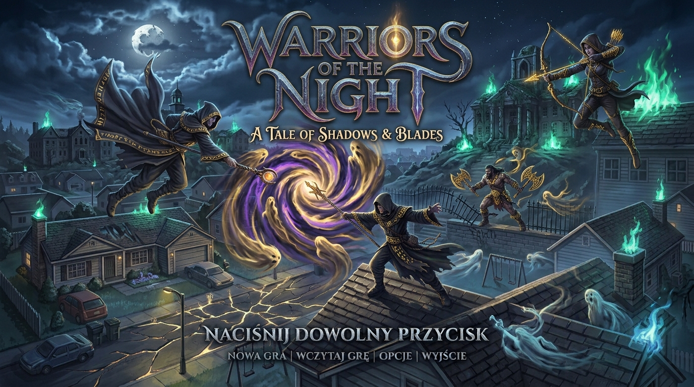
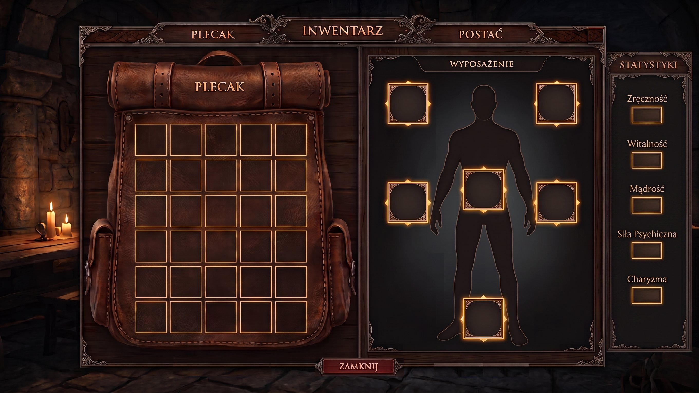

⌂
⚙
Tryb oszczędny (płynniej na telefonie)
Podgląd drążka (diagnostyka)
Pełny ekran
Dźwięki
Muzyka / Otoczenie
💾 Zapisz grę
📂 Wczytaj grę
⬇ Eksportuj zapis
⬆ Importuj zapis
❓ Instrukcja i sterowanie
🧪 Tryb testowy
Tryb testowy
Szybkie zestawy
Plansza
Rodzaj misji
Pora dnia / roku
Oddział
▶ Uruchom misję testową
Gry logiczne (uwalnianie serca)
Narzędzia w trakcie walki
Zamknij
Grzech
Rozjaśnij wszystkie runy. Dotknięcie runy odwraca ją razem z sąsiadami.
WYNIK
0
CEL
256
Strzałki albo WASD scalają kafle
Od nowa
Odejdź
Umiejętności duchowe
Zamknij
Kryzys wiary
Wczytaj grę
Anuluj
Instrukcja
Sterowanie
Miasto
Walka
Rozwój
Zamknij
Misja we śnie
1 Wojownik
2 Wojowników
3 Wojowników
4 Wojowników
Warriors of the Night
Wojownicy Nocy

Nowa gra
Wczytaj grę
Opcje
Wyjście
Jak masz na imię?
Twoje imię wskaże Twojego niebiańskiego patrona, który wesprze Twoje statystyki.
Rozpocznij
Statystyki postaci
Zręczność:
0
Witalność:
0
Mądrość:
0
Siła psychiczna:
0
Odporność na ogień:
-
Charyzma:
0
Zamknij [C]
Rozwój postaci
Gotowe
Zbrojownia - przygotowanie do wyprawy
Rozdziel wyposażenie. Czego nikt nie udźwignie, zostaje w Zbrojowni.
Wyruszamy
Jeszcze nie
Ostoja
Dom modlitwy i ćwiczenia. Tu przygotowujesz się do tego, co czeka w snach.
Zamknij [O]
Rejestr dani
Księgę rozdarto i rozesłano, by nikt nie policzył całości. Składasz ją z powrotem, karta po karcie.
Zamknij
Kronika Wojownika
Wiedza spisana po spotkaniach w snach. Nowe karty odsłaniają się po powrocie z misji.
Zamknij [H]
Szybciej
Pomiń
🎒
👤
◀
▶
🎯
+
−
⛶

Wojownik (Gracz)
Życie (HP):
10
/
10
Punkty Akcji:
10
/
10
Bonus celności:
+0%
Wrogowie
Pozostali przy życiu:
5
SERCE:
3/3
TURA GRACZA
Obróć w lewo [Q]
Obróć w prawo [E]
Następny Wojownik [Tab]
Przyklęknij
Rezerwa PA: 0
Atak wręcz
Lecz
Ocuć
Telekineza
Zapalający (0)
Mrożący (0)
Zadanie
Pochodnia
Balsam (0)
Wyciąg (0)
Sokole Oko (0)
Osłoń drużynę
✝ Umiejętności
Poziom: parter
▲ Piętro wyżej
▼ Piętro niżej
Koniec ruchu
Zakończ Turę
💾 Zapisz grę
Przerwij sen
Zarządzaj całym oddziałem!
Klawisz Tab przełącza wojaków.
Uważaj na zwiadowców!
ŁASKA:
0
Poziom:
1
Misja:
0
UCZYNKI:
0
ZDROWIE:
-
Życie witalne śpiącego
MAPA TAKTYCZNA
Tak
Nie
KONIEC GRY
Zagraj ponownie
Wróć do rzeczywistości
Kontynuuj walkę